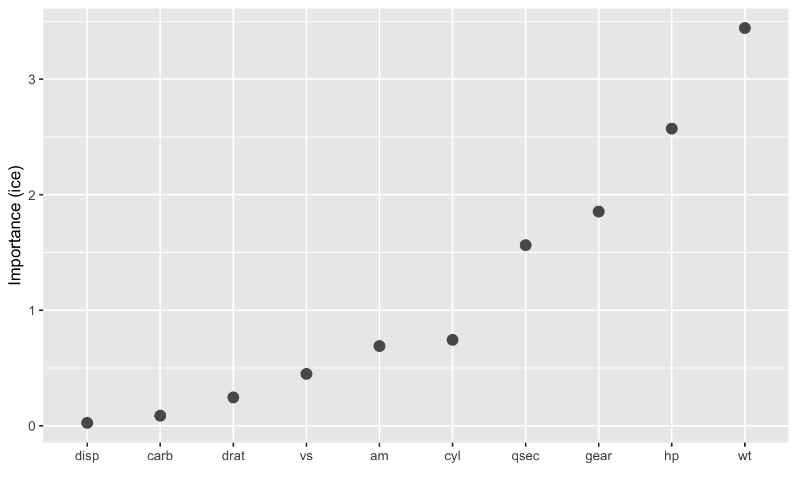
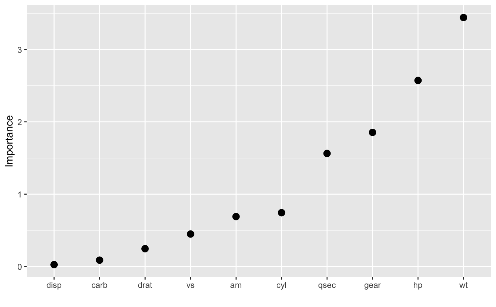
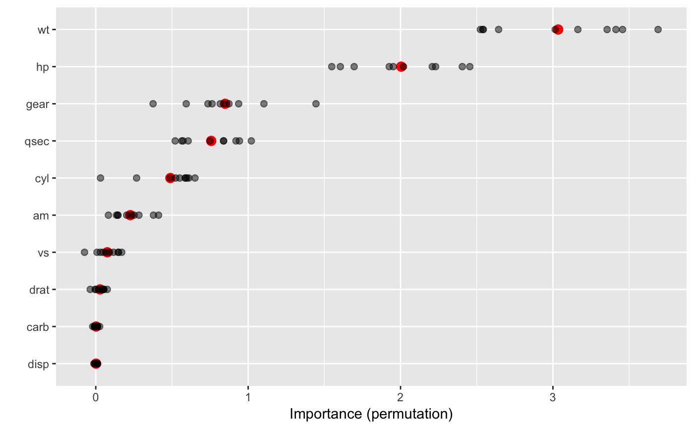

Plot variable importance scores for the predictors in a model.
vip(object, ...) # S3 method for default vip(object, num_features = 10L, bar = TRUE, width = 0.75, horizontal = TRUE, alpha = 1, color = "grey35", fill = "grey35", size = 1, shape = 19, all_permutations = FALSE, jitter = FALSE, ...)
Arguments
| object | A fitted model object (e.g., a |
|---|---|
| ... | Additional optional arguments to be passed onto |
| num_features | Integer specifying the number of variable importance
scores to plot. Default is |
| bar | Logical indicating whether or not to produce a barplot. Default
is |
| width | Numeric value specifying the width of the bars when
|
| horizontal | Logical indicating whether or not to plot the importance
scores on the x-axis ( |
| alpha | Numeric value between 0 and 1 giving the transparency of the
bars ( |
| color | Character string specifying the color to use for the borders of
the bars. Could also be a function, such as
|
| fill | Character string specifying the color to use to fill the bars.
Could also be a function, such as |
| size | Numeric value indicating the size to use for the points whenever
|
| shape | Numeric value indicating the shape to use for the points
whenever |
| all_permutations | Logical indicating whether or not to plot all
permutation scores along with the average. Default is |
| jitter | Logical indicating whether or not to jitter the raw permutation
scores. Default is |
Examples
# # A projection pursuit regression example # # Load the sample data data(mtcars) # Fit a projection pursuit regression model model <- ppr(mpg ~ ., data = mtcars, nterms = 1) # Construct variable importance plot vip(model, method = "ice")# Better yet, store the variable importance scores and then plot vi_scores <- vi(model, method = "ice") vip(vi_scores, bar = FALSE, size = 3, horiz = FALSE)# The \code{\link[magrittr]{\%T>\%}} operator is imported for convenience vi_scores <- model %>% vi(method = "ice") %T>% {print(vip(.))}vi_scores#> # A tibble: 10 x 2 #> Variable Importance #> <chr> <dbl> #> 1 wt 3.44 #> 2 hp 2.57 #> 3 gear 1.85 #> 4 qsec 1.56 #> 5 cyl 0.743 #> 6 am 0.690 #> 7 vs 0.448 #> 8 drat 0.245 #> 9 carb 0.0870 #> 10 disp 0.0248# Permutation scores vip(model, method = "permute", train = mtcars, target = "mpg", nsim = 10, metric = "rmse", bar = FALSE, color = "red", size = 3, all_permutations = TRUE, jitter = FALSE)